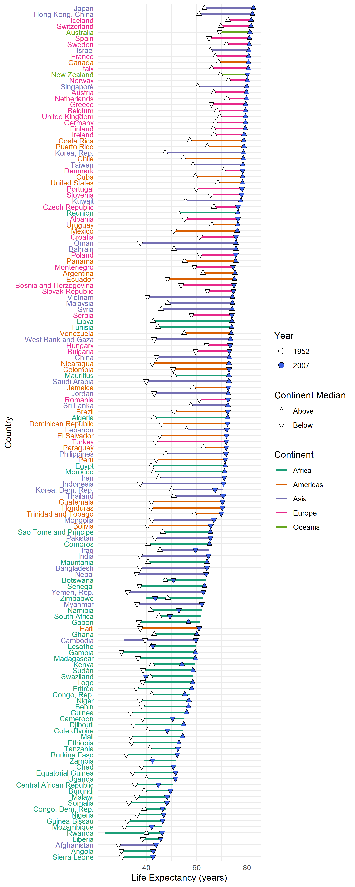

For this assignment, we were tasked with looking through the gapminder dataset, tidying it, and producing some tables and visualizations. I’m quite happy with my process for this graph, even though it ended up a bit busy. The first step was loading up the data and taking a look.
glimpse(gapminder)
## Rows: 1,704
## Columns: 6
## $ country <fct> Afghanistan, Afghanistan, Afghanistan, Afghanistan, Afgha...
## $ continent <fct> Asia, Asia, Asia, Asia, Asia, Asia, Asia, Asia, Asia, Asi...
## $ year <int> 1952, 1957, 1962, 1967, 1972, 1977, 1982, 1987, 1992, 199...
## $ lifeExp <dbl> 28.801, 30.332, 31.997, 34.020, 36.088, 38.438, 39.854, 4...
## $ pop <int> 8425333, 9240934, 10267083, 11537966, 13079460, 14880372,...
## $ gdpPercap <dbl> 779.4453, 820.8530, 853.1007, 836.1971, 739.9811, 786.113...
I thought it would be interesting to look at life expectancies. We could compare each country’s life expectancy to that of the median life expectancy in that continent in each year. I quickly decided that would be too busy, so instead I decided to flatten the trajectory of each country’s life expectancy to a flat line, then plot the endpoints on that projection.
But first, I need to match each country’s life expectancy to its correct continent-year median. Then I left-join that data into the main dataframe and use that to make a set of points, which know whether or not they “beat” the median.
med_le <- gapminder %>%
group_by(continent, year) %>%
summarize(med_le = median(lifeExp), .groups = 'drop_last')
le_points <- gapminder %>%
select(year, continent, country, lifeExp) %>%
filter(year == max(year) | year == min(year)) %>%
left_join(med_le, by = c('continent', 'year')) %>%
mutate(below_med = if_else(lifeExp < med_le, 'Below', 'Above')) %>%
select(-med_le) %>%
mutate(is_max = year == max(year), year = as.factor(year))
Once that’s done, it’s time to do the part that actually ended up being the most difficult for me: coloring the country labels by their continent. I thought about encoding another variable here, but it’s hard to read a word and think about another thing anyway, so I kept it relatively simple, and eventually this is a dual encoding with the line color anyway.
cont_colors <- c('#1b9e77','#d95f02','#7570b3','#e7298a','#66a61e')
y_ax_cont_list <- gapminder %>%
group_by(country) %>%
filter(lifeExp == max(lifeExp)) %>%
ungroup() %>%
arrange(lifeExp) %>%
pull(continent)
y_ax_colors <- cont_colors[y_ax_cont_list]
And finally, we can put it together in a single big ggplot call
gapminder %>%
group_by(country) %>%
select(year, continent, country, lifeExp) %>%
ggplot(aes(x = lifeExp, y = fct_reorder(country, lifeExp, .fun = max))) +
theme_minimal() +
geom_line(aes(color = continent), size = 1) +
geom_point(data = le_points, aes(shape = below_med, fill = year), size = 2) +
scale_shape_manual(values = c(24, 25), name = 'Continent Median') +
scale_color_manual(values = cont_colors, name = 'Continent') +
scale_fill_manual(
values = c('#FFFFFF', '#3B60E4'), name = 'Year',
guide = guide_legend(override.aes = list(shape = 21, size = 3))
) +
theme(axis.text.y = element_text(color = y_ax_colors)) +
ylab('Country') +
xlab('Life Expectancy (years)')

I really like what this plot highlights — some countries have white points to the right of their blue points, which is quite visually striking and represents an important bit of information. Moreover, I think it’s an elegant way (if I do say so myself) to flatten this data into a single image.